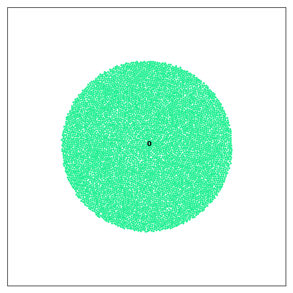
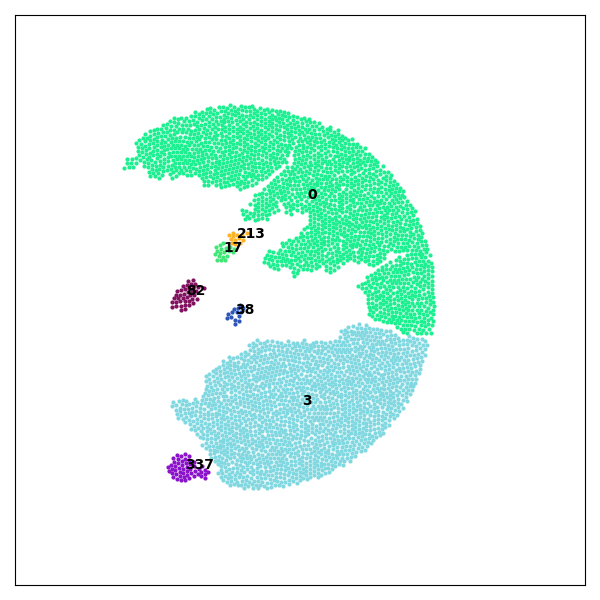
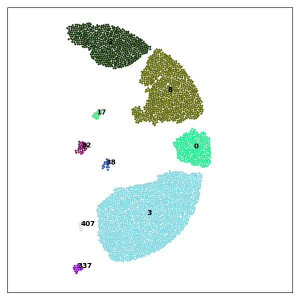

Examples
2D Fragmentation Example
This example demonstrates how to use Crispy to load a set of files obtained from a GranOO simulation of 2D disc impact and visualize fragmentation over time.
Code Example
# load files
files = cp.load_files("files/", extension="agdd")
# detect fragments from stacked files
fragments_history = cp.detect_fragment(files)
# stackplot
cp.stackplot(fragments_history)
# plot fragments at iteration 10
cp.plot(fragments_history[9])
After loading files and detect fragments, this will generate a stack plot of the area repartition of each fragment of iteration n°10, as well as one plot of the fragments, colored and labelled.
Note
Make sure the work directory contains valid input files, the iteration sorting process is based on filename.
Preview of Generated Images
  {kind=link}
{kind=link}
{kind=link}
Run the Example
The full 2D fragmentation example is available in the project repository, inside the examples/2D_impact folder.
To run it locally, use the following commands:
cd examples/2D_impact
python 2D_impact.py
This script will execute the 2D fragmentation detection.
Note
Make sure you have installed all required dependencies listed in the Installation section before running the example.
You can inspect or modify the source code here:
examples/2D_impact/2D_impact.pyinput files are stored in
examples/2D_impact/files/
For more details on input file format, see the Quick Start section.
3D Fragmentation Example
Work in progress.